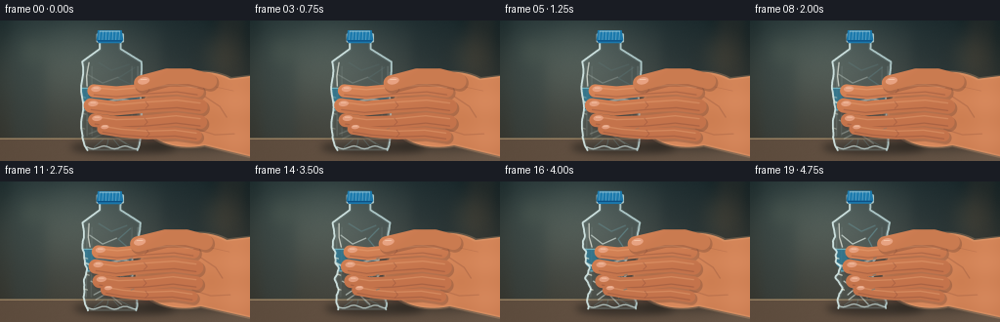
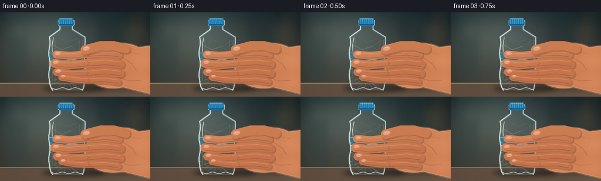

CODING AGENTS AS PIXEL WORLD MODELS
traex/GPT-5.6-Sol · mechanics_0017
点击播放 · 原生 RGB 像素
逐轮保存的候选
回放视频、检查图与代码变化。
每份候选均可单独播放。实际图片检查记录在下方工具轨迹中。
候选 01播放与检查图
点击播放 · 原生 RGB 像素


展开代码变化
--- 上一保存版本
+++ 本次保存版本
@@ -0,0 +1,392 @@
+from pathlib import Path
+import json
+import math
+import cv2
+import numpy as np
+from artifact_io import save
+
+CASE_DIR = Path(__file__).resolve().parent
+SPEC = json.loads((CASE_DIR / "task_spec.json").read_text())
+W, H = int(SPEC["width"]), int(SPEC["height"])
+N, FPS = int(SPEC["frames"]), float(SPEC["fps"])
+S = 4
+w, h = W*S, H*S
+
+rng = np.random.default_rng(17)
+
+
+def sc_pts(points):
+ return np.array([[(int(round(x*S)), int(round(y*S))) for x, y in points]], np.int32)
+
+
+def mask_poly(points):
+ m = np.zeros((h, w), np.uint8)
+ cv2.fillPoly(m, sc_pts(points), 255, lineType=cv2.LINE_AA)
+ return m
+
+
+def mask_ellipse(center, axes, angle=0):
+ m = np.zeros((h, w), np.uint8)
+ cv2.ellipse(m, (round(center[0]*S), round(center[1]*S)),
+ (round(axes[0]*S), round(axes[1]*S)), angle, 0, 360, 255,
+ -1, cv2.LINE_AA)
+ return m
+
+
+def path_mask(points, thickness, closed=False):
+ m = np.zeros((h, w), np.uint8)
+ pts = np.array([(round(x*S), round(y*S)) for x, y in points], np.int32)
+ cv2.polylines(m, [pts], closed, 255, round(thickness*S), cv2.LINE_AA)
+ if not closed:
+ r = round(thickness*S/2)
+ cv2.circle(m, tuple(pts[0]), r, 255, -1, cv2.LINE_AA)
+ cv2.circle(m, tuple(pts[-1]), r, 255, -1, cv2.LINE_AA)
+ return m
+
+
+def composite(img, color_or_img, mask, opacity=1.0):
+ a = (mask.astype(np.float32) / 255.0 * opacity)[..., None]
+ if np.ndim(color_or_img) == 1:
+ src = np.empty_like(img)
+ src[:] = color_or_img
+ else:
+ src = np.asarray(color_or_img, np.float32)
+ return img * (1-a) + src * a
+
+
+def pressure_curve(v):
+ # Slow initial contact, then clearly accelerating collapse.
+ s = v*v*(3-2*v)
+ return 0.12*v + 0.88*(s**1.18)
+
+
+def bottle_bounds(y, p):
+ # Base PET profile, then asymmetric local indentation and late-stage buckling.
+ if y < 14:
+ base_l, base_r = 101.5, 124.0
+ elif y < 22:
+ base_l, base_r = 99.5, 126.0
+ elif y < 29:
+ base_l, base_r = 102.0, 123.5
+ elif y < 42:
+ u = (y-29)/13
+ base_l = 102 - 18*u
+ base_r = 123.5 + 21*u
+ elif y < 119:
+ base_l = 84.0 + 1.1*math.sin((y-42)*0.17)
+ base_r = 144.2 + 0.8*math.sin((y-42)*0.14+0.7)
+ elif y < 128:
+ u=(y-119)/9
+ base_l=84+2.5*u
+ base_r=144-1.5*u
+ else:
+ u=min(1,(y-128)/5)
+ base_l=86.5+3*u
+ base_r=142.5-2*u
+
+ # Pinching is concentrated at the gripping fingers. Right side is driven harder
+ # by the palm; fingertips curl and push in from the left.
+ g = math.exp(-((y-88)/31)**2)
+ g2 = math.exp(-((y-105)/18)**2)
+ ripple = (math.sin((y-51)*0.34) + .42*math.sin((y-47)*0.77))
+ left_in = p*(5.7*g + 2.5*g2) + (p**1.6)*1.8*ripple*g
+ right_in = p*(13.3*g + 3.8*g2) - (p**1.55)*2.1*ripple*g
+ # Buckle beneath the hand near the end.
+ late = max(0, (p-.58)/.42)
+ left_in += late*4.5*math.exp(-((y-115)/7.5)**2)
+ right_in += late*8.0*math.exp(-((y-116)/8.5)**2)
+ shift = -1.6*p*g + 2.2*late*math.exp(-((y-120)/11)**2)
+ return base_l + left_in + shift, base_r - right_in + shift
+
+
+def bottle_geometry(p):
+ ys = np.linspace(13, 133, 241)
+ left, right = [], []
+ # Slight vertical compaction at high pressure.
+ comp = 3.0*max(0, (p-.35)/.65)**1.3
+ for yy in ys:
+ ysrc = yy + comp*max(0, (yy-40)/93)
+ l, r = bottle_bounds(ysrc, p)
+ left.append((l, yy-comp*max(0, (yy-38)/95)))
+ right.append((r, yy-comp*max(0, (yy-38)/95)))
+ pts = left + right[::-1]
+ return mask_poly(pts), ys, np.array([x for x,_ in left]), np.array([x for x,_ in right]), comp
+
+
+def draw_background(frame_index):
+ yy, xx = np.mgrid[0:h, 0:w].astype(np.float32)
+ X, Y = xx/S, yy/S
+ # Cool, softly-lit kitchen/workshop backdrop.
+ top = np.array([40, 54, 57], np.float32)
+ bot = np.array([78, 76, 67], np.float32)
+ q = np.clip(Y/144, 0, 1)[...,None]
+ img = top*(1-q) + bot*q
+ glow = np.exp(-(((X-69)/78)**2 + ((Y-35)/54)**2))[...,None]
+ img += glow*np.array([34, 36, 31], np.float32)
+ vign = np.clip(((X-128)/150)**2 + ((Y-72)/100)**2, 0, 1)[...,None]
+ img -= 21*vign
+ # Out-of-focus wall panels and appliance silhouettes.
+ for x0, ww, col, a in [(12,34,(51,66,66),.35),(166,46,(31,45,48),.38),(223,28,(72,62,51),.25)]:
+ m = mask_poly([(x0,0),(x0+ww,0),(x0+ww,123),(x0,123)])
+ m = cv2.GaussianBlur(m,(0,0),5*S)
+ img = composite(img, np.array(col,np.float32), m, a)
+ # Defocused highlights.
+ for cx,cy,rad,col,op in [(34,31,13,(129,141,116),.15),(226,35,18,(166,128,79),.10),(178,58,9,(144,154,128),.09)]:
+ m=mask_ellipse((cx,cy),(rad,rad))
+ m=cv2.GaussianBlur(m,(0,0),8*S)
+ img=composite(img,np.array(col,np.float32),m,op)
+ # Wood/stone counter.
+ cm=mask_poly([(0,121),(256,121),(256,144),(0,144)])
+ counter=np.zeros_like(img)
+ counter[:] = [94,76,61]
+ counter += ((X/256)*12)[...,None]
+ img=composite(img,counter,cm,.96)
+ cv2.line(img,(0,121*S),(w,121*S),(164,139,104),S,cv2.LINE_AA)
+ # fine photographic grain, fixed through time for stable camera
+ grain = rng_for_bg.normal(0,1.4,(h,w,1))
+ return np.clip(img+grain,0,255)
+
+
+# Stable grain field prevents background flicker.
+rng_for_bg = np.random.default_rng(831)
+BACKGROUND = draw_background(0)
+
+
+def render_frame(i):
+ v = i/(N-1)
+ p = pressure_curve(v)
+ img = BACKGROUND.copy()
+
+ # Grounded contact shadows.
+ sh = mask_ellipse((126+2*p,130),(54-4*p,7),0)
+ sh = cv2.GaussianBlur(sh,(0,0),4*S)
+ img = composite(img,np.array([19,20,19],np.float32),sh,.54)
+ hsh = mask_ellipse((209-5*p,123),(59,10),-3)
+ hsh = cv2.GaussianBlur(hsh,(0,0),6*S)
+ img = composite(img,np.array([20,20,18],np.float32),hsh,.42)
+
+ # Palm and wrist behind the bottle. It translates inward as pressure rises.
+ hp = 7.3*p
+ palm = mask_ellipse((199-hp,91),(56,38),-8)
+ wrist = mask_poly([(194-hp,65),(256,57),(256,139),(198-hp,125),(166-hp,112),(154-hp,81)])
+ hand_back = np.maximum(palm,wrist)
+ yy,xx=np.mgrid[0:h,0:w].astype(np.float32); X=xx/S;Y=yy/S
+ light=np.clip(.55 + .34*(1-X/256)+.17*(1-Y/144),0,1)
+ skin=np.zeros_like(img)
+ skin[...,0]=178+50*light
+ skin[...,1]=103+44*light
+ skin[...,2]=67+31*light
+ # subtle warm translucency toward the edge
+ skin += (3*np.sin(X*.11)+2*np.sin(Y*.17))[...,None]
+ img=composite(img,skin,hand_back,1)
+ rim = cv2.morphologyEx(hand_back,cv2.MORPH_GRADIENT,np.ones((3*S,3*S),np.uint8))
+ img=composite(img,np.array([238,177,130],np.float32),rim,.25)
+ # Palm tendons/creases visible beyond bottle.
+ for pts,th,op in [([(210-hp,78),(225-hp,88),(232-hp,99)],.75,.27),
+ ([(201-hp,111),(220-hp,117),(240-hp,116)],.65,.23),
+ ([(221-hp,68),(239-hp,72)],.55,.18)]:
+ lm=path_mask(pts,th)
+ lm=np.minimum(lm,hand_back)
+ img=composite(img,np.array([124,68,51],np.float32),lm,op)
+
+ # Bottle body, optically translucent over the background and palm.
+ bm, ys, ls, rs, comp = bottle_geometry(p)
+ # Cool transparent glazing.
+ edge_dist = cv2.distanceTransform((bm>0).astype(np.uint8),cv2.DIST_L2,5)/S
+ edgeglow=np.clip((3.2-edge_dist)/3.2,0,1)
+ body_tint=np.empty_like(img)
+ body_tint[:] = [174,205,207]
+ body_alpha=(.075 + .28*edgeglow)*(bm/255)
+ img=img*(1-body_alpha[...,None])+body_tint*body_alpha[...,None]
+
+ # Inner vertical optical distortions/ribs.
+ for x0,op in [(89,.12),(94,.08),(135,.08),(141,.15)]:
+ lm=path_mask([(x0,47),(x0-1.5*p,118)],1.0)
+ lm=np.minimum(lm,bm)
+ img=composite(img,np.array([218,239,237],np.float32),lm,op)
+
+ # Label wraps and compresses with the bottle. Its silhouette tracks boundaries.
+ label_pts=[]
+ for yy0 in np.linspace(69,92,48):
+ l,r=bottle_bounds(float(yy0),p)
+ label_pts.append((l+.7,yy0))
+ for yy0 in np.linspace(92,69,48):
+ l,r=bottle_bounds(float(yy0),p)
+ label_pts.append((r-.7,yy0))
+ label=mask_poly(label_pts)
+ label_col=np.zeros_like(img)
+ label_col[...,0]=35 + 10*(Y/144)
+ label_col[...,1]=116 + 18*(1-X/256)
+ label_col[...,2]=153 + 18*(1-Y/144)
+ img=composite(img,label_col,label,.68)
+ # Label's white swoop makes changing curvature legible.
+ wave=[]
+ for xx0 in np.linspace(86,141,80):
+ wave.append((xx0, 83 + 2.2*math.sin((xx0-84)*.12) + 1.3*p*math.sin((xx0-90)*.3)))
+ wm=path_mask(wave,1.45)
+ wm=np.minimum(wm,label)
+ img=composite(img,np.array([220,231,219],np.float32),wm,.72)
+ # label border
+ for yy0 in [69.3,91.7]:
+ pts=[]
+ l,r=bottle_bounds(yy0,p)
+ pts=[(l+1,yy0),(r-1,yy0)]
+ lm=path_mask(pts,.65);lm=np.minimum(lm,bm)
+ img=composite(img,np.array([150,213,220],np.float32),lm,.56)
+
+ # Plastic contour highlights using the deformed boundaries.
+ lp=[(float(x),float(y-comp*max(0,(y-38)/95))) for x,y in zip(ls,ys)]
+ rp=[(float(x),float(y-comp*max(0,(y-38)/95))) for x,y in zip(rs,ys)]
+ for pts,th,col,op in [(lp,1.25,(218,239,237),.86),(rp,1.15,(200,229,230),.74)]:
+ lm=path_mask(pts,th)
+ img=composite(img,np.array(col,np.float32),lm,op)
+ # Hot highlight down upper left; breaks under compression.
+ hi=path_mask([(91,43),(88.5+3*p,57),(89+5.5*p,67)],1.0)
+ hi=np.minimum(hi,bm)
+ img=composite(img,np.array([249,251,239],np.float32),hi,.65)
+
+ # Pressure wrinkles grow in, clipped to exposed plastic.
+ fold_alpha=.16+.64*p
+ folds=[
+ ([(89+5*p,55),(105,64),(121-3*p,58)],.82),
+ ([(138-8*p,48),(121,59),(137-12*p,67)],.75),
+ ([(89+7*p,102),(107,110),(91+9*p,116)],.82),
+ ([(137-12*p,98),(117,110),(136-16*p,119)],.90),
+ ([(94+7*p,121),(110,114),(129-8*p,126)],.68),
+ ([(101,43),(114,51),(132-4*p,45)],.55),
+ ]
+ for j,(pts,op) in enumerate(folds):
+ lm=path_mask(pts,.75 if j%2 else .95)
+ lm=np.minimum(lm,bm)
+ col=np.array([105,151,158] if j%2 else [229,242,235],np.float32)
+ img=composite(img,col,lm,op*fold_alpha)
+ # Fine starburst at main pinch, only later.
+ late=max(0,(p-.25)/.75)
+ for ang in [-48,-25,19,42]:
+ a=math.radians(ang)
+ cx,cy=124-4*p,96
+ L=13+8*p
+ lm=path_mask([(cx,cy),(cx+L*math.cos(a),cy+L*math.sin(a))],.48)
+ lm=np.minimum(lm,bm)
+ img=composite(img,np.array([230,241,233],np.float32),lm,.52*late)
+
+ # Base petaloid feet and compressed lower rim.
+ base_y=130-comp
+ rimpts=[]
+ for xx0 in np.linspace(89,140,70):
+ rimpts.append((xx0,base_y+1.4*math.sin((xx0-90)*.29)))
+ lm=path_mask(rimpts,1.0);lm=np.minimum(lm,bm)
+ img=composite(img,np.array([211,232,229],np.float32),lm,.72)
+ for x0 in [96,109,123,136]:
+ lm=path_mask([(x0,base_y),(112+(x0-112)*.42,122-comp*.45)],.55)
+ lm=np.minimum(lm,bm)
+ img=composite(img,np.array([116,157,161],np.float32),lm,.34)
+
+ # Blue cap and tamper band, kept rigid while bottle below gives way.
+ cap_shift=-.15*comp
+ cap=mask_poly([(100,10+cap_shift),(124.5,10+cap_shift),(126,20+cap_shift),
+ (123.5,23+cap_shift),(101,23+cap_shift),(98.8,20+cap_shift)])
+ cap_img=np.zeros_like(img)
+ cap_img[...,0]=22+10*(1-X/256)
+ cap_img[...,1]=91+34*(1-Y/144)
+ cap_img[...,2]=145+31*(1-Y/144)
+ img=composite(img,cap_img,cap,1)
+ for x0 in np.arange(102,125,3.4):
+ lm=path_mask([(x0,11+cap_shift),(x0-.6,19.5+cap_shift)],.55)
+ lm=np.minimum(lm,cap)
+ img=composite(img,np.array([136,188,210],np.float32),lm,.62)
+ lm=path_mask([(100,20.7+cap_shift),(124.5,20.7+cap_shift)],.85)
+ img=composite(img,np.array([9,67,120],np.float32),lm,.75)
+ lm=path_mask([(102,11+cap_shift),(122.5,11+cap_shift)],.65)
+ img=composite(img,np.array([185,217,221],np.float32),lm,.54)
+
+ # Foreground gripping fingers: positions curl in and slide toward bottle center.
+ # Knuckle shadows are rendered first for convincing separation.
+ finger_specs=[
+ ([(202-hp,72),(181-hp*.72,69),(151-hp*.38,71),(119+2*p,74),(96+8*p,72)],13.0),
+ ([(205-hp,88),(181-hp*.72,85),(150-hp*.35,87),(117+3*p,90),(93+9*p,87)],14.5),
+ ([(205-hp,104),(180-hp*.70,101),(149-hp*.33,104),(119+4*p,105),(97+8*p,102)],13.6),
+ ([(201-hp,118),(179-hp*.66,115),(151-hp*.3,116),(124+3*p,114),(105+6*p,111)],10.8),
+ ]
+ for pts,th in finger_specs:
+ fm=path_mask([(x+1.5,y+2.2) for x,y in pts],th+1.5)
+ img=composite(img,np.array([78,48,41],np.float32),fm,.26)
+ for fi,(pts,th) in enumerate(finger_specs):
+ fm=path_mask(pts,th)
+ # Finger shading: light on top/left, warmer undersides.
+ fcol=np.zeros_like(img)
+ local_light=np.clip(.78-.010*(Y-55)-.002*(X-90),.25,.9)
+ fcol[...,0]=184+48*local_light
+ fcol[...,1]=105+43*local_light
+ fcol[...,2]=68+30*local_light
+ img=composite(img,fcol,fm,1)
+ # upper specular edge and lower contact shade
+ upper=[(x,y-th*.25) for x,y in pts]
+ um=path_mask(upper,.7);um=np.minimum(um,fm)
+ img=composite(img,np.array([244,180,132],np.float32),um,.32)
+ lower=[(x,y+th*.30) for x,y in pts]
+ lm=path_mask(lower,.72);lm=np.minimum(lm,fm)
+ img=composite(img,np.array([116,63,51],np.float32),lm,.30)
+ # Nails on curled fingertips, making the hand instantly readable.
+ ex,ey=pts[-1]
+ nail=mask_ellipse((ex+2.3,ey-2.0),(5.0 if fi<3 else 4.0,2.7 if fi<3 else 2.1),-5)
+ nail=np.minimum(nail,fm)
+ img=composite(img,np.array([235,169,139],np.float32),nail,.78)
+ nail_hi=path_mask([(ex-.2,ey-3),(ex+4.5,ey-3.1)],.45)
+ nail_hi=np.minimum(nail_hi,nail)
+ img=composite(img,np.array([255,219,192],np.float32),nail_hi,.62)
+ # Joint crease.
+ kx,ky=pts[2]
+ crease=path_mask([(kx-1,ky-4),(kx+2,ky),(kx-1,ky+3)],.52)
+ crease=np.minimum(crease,fm)
+ img=composite(img,np.array([126,66,52],np.float32),crease,.38)
+
+ # Thumb presses diagonally into the bottle's upper-right side.
+ thumb_pts=[(214-hp,62),(194-hp*.8,57),(171-hp*.45,57),(145-7*p,64)]
+ tsh=path_mask([(x+1.5,y+2) for x,y in thumb_pts],17.0)
+ img=composite(img,np.array([79,48,40],np.float32),tsh,.25)
+ tm=path_mask(thumb_pts,15.5)
+ tcol=np.zeros_like(img)
+ tl=np.clip(.78-.006*(X-110)-.008*(Y-45),.35,.92)
+ tcol[...,0]=186+48*tl;tcol[...,1]=108+43*tl;tcol[...,2]=70+31*tl
+ img=composite(img,tcol,tm,1)
+ # thumbnail near the pressing tip
+ tx,ty=thumb_pts[-1]
+ nail=mask_ellipse((tx+2,ty-2.2),(6.0,3.5),-12)
+ nail=np.minimum(nail,tm)
+ img=composite(img,np.array([238,171,141],np.float32),nail,.82)
+ nh=path_mask([(tx-1,ty-3.5),(tx+5,ty-3.8)],.5);nh=np.minimum(nh,nail)
+ img=composite(img,np.array([255,220,194],np.float32),nh,.68)
+
+ # Tiny squeeze-contact highlights in the narrow gaps between fingers.
+ contact_alpha=.18+.50*p
+ for cy in [79,96,111]:
+ l,r=bottle_bounds(cy,p)
+ lm=path_mask([(l+.5,cy-1),(l+3.5,cy)],.65)
+ img=composite(img,np.array([245,247,228],np.float32),lm,contact_alpha)
+ lm=path_mask([(r-3,cy),(r,cy-1)],.65)
+ img=composite(img,np.array([91,124,126],np.float32),lm,contact_alpha*.7)
+
+ # Controlled final grade and downsample for natural antialiasing.
+ img=np.clip(img,0,255).astype(np.uint8)
+ img=cv2.resize(img,(W,H),interpolation=cv2.INTER_AREA)
+ # Slight local contrast, preserving realistic softness.
+ blur=cv2.GaussianBlur(img,(0,0),0.55)
+ img=cv2.addWeighted(img,1.10,blur,-.10,0)
+ return img
+
+
+def main():
+ frames=np.stack([render_frame(i) for i in range(N)]).astype(np.uint8)
+ save(frames,CASE_DIR)
+ # A conventional RGB video file in addition to the benchmark's lossless artifact.
+ out=cv2.VideoWriter(str(CASE_DIR/"video.mp4"),cv2.VideoWriter_fourcc(*"mp4v"),FPS,(W,H))
+ if out.isOpened():
+ for fr in frames:
+ out.write(cv2.cvtColor(fr,cv2.COLOR_RGB2BGR))
+ out.release()
+ print(f"saved {len(frames)} RGB frames at {W}x{H}, {FPS:g} fps")
+
+
+if __name__ == "__main__":
+ main()
可观测工具轨迹
实际执行的命令与返回图片。
命令 1exit 0
/bin/bash -lc "cat prompt.txt && printf '\\n--- GENERATION_RULES.md ---\\n' && cat GENERATION_RULES.md"
命令 2exit 0
/bin/bash -lc "cat task_spec.json && printf '\\n--- FILES ---\\n' && find . -maxdepth 2 -type f -printf '%p\\n' | sort"
命令 3exit 0
/bin/bash -lc "command -v ffmpeg || true; command -v blender || true; command -v convert || true; python3 - <<'PY' mods=['numpy','cv2','PIL','matplotlib','imageio','scipy'] for m in mods: try: mod=__import__(m) print(m, 'OK', getattr(mod,'__version__','')) except Exception as e: print(m,'NO',e) PY"
命令 4exit 0
/bin/bash -lc "sed -n '1,260p' artifact_io.py"
命令 5exit 0
/bin/bash -lc "cat > generate.py <<'PY'
from pathlib import Path
import json
import math
import cv2
import numpy as np
from artifact_io import save
CASE_DIR = Path(__file__).resolve().parent
SPEC = json.loads((CASE_DIR / \"task_spec.json\").read_text())
W, H = int(SPEC[\"width\"]), int(SPEC[\"height\"])
N, FPS = int(SPEC[\"frames\"]), float(SPEC[\"fps\"])
S = 4
w, h = W*S, H*S
rng = np.random.default_rng(17)
def sc_pts(points):
return np.array([[(int(round(x*S)), int(round(y*S))) for x, y in points]], np.int32)
def mask_poly(points):
m = np.zeros((h, w), np.uint8)
cv2.fillPoly(m, sc_pts(points), 255, lineType=cv2.LINE_AA)
return m
def mask_ellipse(center, axes, angle=0):
m = np.zeros((h, w), np.uint8)
cv2.ellipse(m, (round(center[0]*S), round(center[1]*S)),
(round(axes[0]*S), round(axes[1]*S)), angle, 0, 360, 255,
-1, cv2.LINE_AA)
return m
def path_mask(points, thickness, closed=False):
m = np.zeros((h, w), np.uint8)
pts = np.array([(round(x*S), round(y*S)) for x, y in points], np.int32)
cv2.polylines(m, [pts], closed, 255, round(thickness*S), cv2.LINE_AA)
if not closed:
r = round(thickness*S/2)
cv2.circle(m, tuple(pts[0]), r, 255, -1, cv2.LINE_AA)
cv2.circle(m, tuple(pts[-1]), r, 255, -1, cv2.LINE_AA)
return m
def composite(img, color_or_img, mask, opacity=1.0):
a = (mask.astype(np.float32) / 255.0 * opacity)[..., None]
if np.ndim(color_or_img) == 1:
src = np.empty_like(img)
src[:] = color_or_img
else:
src = np.asarray(color_or_img, np.float32)
return img * (1-a) + src * a
def pressure_curve(v):
# Slow initial contact, then clearly accelerating collapse.
s = v*v*(3-2*v)
return 0.12*v + 0.88*(s**1.18)
def bottle_bounds(y, p):
# Base PET profile, then asymmetric local indentation and late-stage buckling.
if y < 14:
base_l, base_r = 101.5, 124.0
elif y < 22:
base_l, base_r = 99.5, 126.0
elif y < 29:
base_l, base_r = 102.0, 123.5
elif y < 42:
u = (y-29)/13
base_l = 102 - 18*u
base_r = 123.5 + 21*u
elif y < 119:
base_l = 84.0 + 1.1*math.sin((y-42)*0.17)
base_r = 144.2 + 0.8*math.sin((y-42)*0.14+0.7)
elif y < 128:
u=(y-119)/9
base_l=84+2.5*u
base_r=144-1.5*u
else:
u=min(1,(y-128)/5)
base_l=86.5+3*u
base_r=142.5-2*u
# Pinching is concentrated at the gripping fingers. Right side is driven harder
# by the palm; fingertips curl and push in from the left.
g = math.exp(-((y-88)/31)**2)
g2 = math.exp(-((y-105)/18)**2)
ripple = (math.sin((y-51)*0.34) + .42*math.sin((y-47)*0.77))
left_in = p*(5.7*g + 2.5*g2) + (p**1.6)*1.8*ripple*g
right_in = p*(13.3*g + 3.8*g2) - (p**1.55)*2.1*ripple*g
# Buckle beneath the hand near the end.
late = max(0, (p-.58)/.42)
left_in += late*4.5*math.exp(-((y-115)/7.5)**2)
right_in += late*8.0*math.exp(-((y-116)/8.5)**2)
shift = -1.6*p*g + 2.2*late*math.exp(-((y-120)/11)**2)
return base_l + left_in + shift, base_r - right_in + shift
def bottle_geometry(p):
ys = np.linspace(13, 133, 241)
left, right = [], []
# Slight vertical compaction at high pressure.
comp = 3.0*max(0, (p-.35)/.65)**1.3
for yy in ys:
ysrc = yy + comp*max(0, (yy-40)/93)
l, r = bottle_bounds(ysrc, p)
left.append((l, yy-comp*max(0, (yy-38)/95)))
right.append((r, yy-comp*max(0, (yy-38)/95)))
pts = left + right[::-1]
return mask_poly(pts), ys, np.array([x for x,_ in left]), np.array([x for x,_ in right]), comp
def draw_background(frame_index):
yy, xx = np.mgrid[0:h, 0:w].astype(np.float32)
X, Y = xx/S, yy/S
# Cool, softly-lit kitchen/workshop backdrop.
top = np.array([40, 54, 57], np.float32)
bot = np.array([78, 76, 67], np.float32)
q = np.clip(Y/144, 0, 1)[...,None]
img = top*(1-q) + bot*q
glow = np.exp(-(((X-69)/78)**2 + ((Y-35)/54)**2))[...,None]
img += glow*np.array([34, 36, 31], np.float32)
vign = np.clip(((X-128)/150)**2 + ((Y-72)/100)**2, 0, 1)[...,None]
img -= 21*vign
# Out-of-focus wall panels and appliance silhouettes.
for x0, ww, col, a in [(12,34,(51,66,66),.35),(166,46,(31,45,48),.38),(223,28,(72,62,51),.25)]:
m = mask_poly([(x0,0),(x0+ww,0),(x0+ww,123),(x0,123)])
m = cv2.GaussianBlur(m,(0,0),5*S)
img = composite(img, np.array(col,np.float32), m, a)
# Defocused highlights.
for cx,cy,rad,col,op in [(34,31,13,(129,141,116),.15),(226,35,18,(166,128,79),.10),(178,58,9,(144,154,128),.09)]:
m=mask_ellipse((cx,cy),(rad,rad))
m=cv2.GaussianBlur(m,(0,0),8*S)
img=composite(img,np.array(col,np.float32),m,op)
# Wood/stone counter.
cm=mask_poly([(0,121),(256,121),(256,144),(0,144)])
counter=np.zeros_like(img)
counter[:] = [94,76,61]
counter += ((X/256)*12)[...,None]
img=composite(img,counter,cm,.96)
cv2.line(img,(0,121*S),(w,121*S),(164,139,104),S,cv2.LINE_AA)
# fine photographic grain, fixed through time for stable camera
grain = rng_for_bg.normal(0,1.4,(h,w,1))
return np.clip(img+grain,0,255)
# Stable grain field prevents background flicker.
rng_for_bg = np.random.default_rng(831)
BACKGROUND = draw_background(0)
def render_frame(i):
v = i/(N-1)
p = pressure_curve(v)
img = BACKGROUND.copy()
# Grounded contact shadows.
sh = mask_ellipse((126+2*p,130),(54-4*p,7),0)
sh = cv2.GaussianBlur(sh,(0,0),4*S)
img = composite(img,np.array([19,20,19],np.float32),sh,.54)
hsh = mask_ellipse((209-5*p,123),(59,10),-3)
hsh = cv2.GaussianBlur(hsh,(0,0),6*S)
img = composite(img,np.array([20,20,18],np.float32),hsh,.42)
# Palm and wrist behind the bottle. It translates inward as pressure rises.
hp = 7.3*p
palm = mask_ellipse((199-hp,91),(56,38),-8)
wrist = mask_poly([(194-hp,65),(256,57),(256,139),(198-hp,125),(166-hp,112),(154-hp,81)])
hand_back = np.maximum(palm,wrist)
yy,xx=np.mgrid[0:h,0:w].astype(np.float32); X=xx/S;Y=yy/S
light=np.clip(.55 + .34*(1-X/256)+.17*(1-Y/144),0,1)
skin=np.zeros_like(img)
skin[...,0]=178+50*light
skin[...,1]=103+44*light
skin[...,2]=67+31*light
# subtle warm translucency toward the edge
skin += (3*np.sin(X*.11)+2*np.sin(Y*.17))[...,None]
img=composite(img,skin,hand_back,1)
rim = cv2.morphologyEx(hand_back,cv2.MORPH_GRADIENT,np.ones((3*S,3*S),np.uint8))
img=composite(img,np.array([238,177,130],np.float32),rim,.25)
# Palm tendons/creases visible beyond bottle.
for pts,th,op in [([(210-hp,78),(225-hp,88),(232-hp,99)],.75,.27),
([(201-hp,111),(220-hp,117),(240-hp,116)],.65,.23),
([(221-hp,68),(239-hp,72)],.55,.18)]:
lm=path_mask(pts,th)
lm=np.minimum(lm,hand_back)
img=composite(img,np.array([124,68,51],np.float32),lm,op)
# Bottle body, optically translucent over the background and palm.
bm, ys, ls, rs, comp = bottle_geometry(p)
# Cool transparent glazing.
edge_dist = cv2.distanceTransform((bm>0).astype(np.uint8),cv2.DIST_L2,5)/S
edgeglow=np.clip((3.2-edge_dist)/3.2,0,1)
body_tint=np.empty_like(img)
body_tint[:] = [174,205,207]
body_alpha=(.075 + .28*edgeglow)*(bm/255)
img=img*(1-body_alpha[...,None])+body_tint*body_alpha[...,None]
# Inner vertical optical distortions/ribs.
for x0,op in [(89,.12),(94,.08),(135,.08),(141,.15)]:
lm=path_mask([(x0,47),(x0-1.5*p,118)],1.0)
lm=np.minimum(lm,bm)
img=composite(img,np.array([218,239,237],np.float32),lm,op)
# Label wraps and compresses with the bottle. Its silhouette tracks boundaries.
label_pts=[]
for yy0 in np.linspace(69,92,48):
l,r=bottle_bounds(float(yy0),p)
label_pts.append((l+.7,yy0))
for yy0 in np.linspace(92,69,48):
l,r=bottle_bounds(float(yy0),p)
label_pts.append((r-.7,yy0))
label=mask_poly(label_pts)
label_col=np.zeros_like(img)
label_col[...,0]=35 + 10*(Y/144)
label_col[...,1]=116 + 18*(1-X/256)
label_col[...,2]=153 + 18*(1-Y/144)
img=composite(img,label_col,label,.68)
# Label's white swoop makes changing curvature legible.
wave=[]
for xx0 in np.linspace(86,141,80):
wave.append((xx0, 83 + 2.2*math.sin((xx0-84)*.12) + 1.3*p*math.sin((xx0-90)*.3)))
wm=path_mask(wave,1.45)
wm=np.minimum(wm,label)
img=composite(img,np.array([220,231,219],np.float32),wm,.72)
# label border
for yy0 in [69.3,91.7]:
pts=[]
l,r=bottle_bounds(yy0,p)
pts=[(l+1,yy0),(r-1,yy0)]
lm=path_mask(pts,.65);lm=np.minimum(lm,bm)
img=composite(img,np.array([150,213,220],np.float32),lm,.56)
# Plastic contour highlights using the deformed boundaries.
lp=[(float(x),float(y-comp*max(0,(y-38)/95))) for x,y in zip(ls,ys)]
rp=[(float(x),float(y-comp*max(0,(y-38)/95))) for x,y in zip(rs,ys)]
for pts,th,col,op in [(lp,1.25,(218,239,237),.86),(rp,1.15,(200,229,230),.74)]:
lm=path_mask(pts,th)
img=composite(img,np.array(col,np.float32),lm,op)
# Hot highlight down upper left; breaks under compression.
hi=path_mask([(91,43),(88.5+3*p,57),(89+5.5*p,67)],1.0)
hi=np.minimum(hi,bm)
img=composite(img,np.array([249,251,239],np.float32),hi,.65)
# Pressure wrinkles grow in, clipped to exposed plastic.
fold_alpha=.16+.64*p
folds=[
([(89+5*p,55),(105,64),(121-3*p,58)],.82),
([(138-8*p,48),(121,59),(137-12*p,67)],.75),
([(89+7*p,102),(107,110),(91+9*p,116)],.82),
([(137-12*p,98),(117,110),(136-16*p,119)],.90),
([(94+7*p,121),(110,114),(129-8*p,126)],.68),
([(101,43),(114,51),(132-4*p,45)],.55),
]
for j,(pts,op) in enumerate(folds):
lm=path_mask(pts,.75 if j%2 else .95)
lm=np.minimum(lm,bm)
col=np.array([105,151,158] if j%2 else [229,242,235],np.float32)
img=composite(img,col,lm,op*fold_alpha)
# Fine starburst at main pinch, only later.
late=max(0,(p-.25)/.75)
for ang in [-48,-25,19,42]:
a=math.radians(ang)
cx,cy=124-4*p,96
L=13+8*p
lm=path_mask([(cx,cy),(cx+L*math.cos(a),cy+L*math.sin(a))],.48)
lm=np.minimum(lm,bm)
img=composite(img,np.array([230,241,233],np.float32),lm,.52*late)
# Base petaloid feet and compressed lower rim.
base_y=130-comp
rimpts=[]
for xx0 in np.linspace(89,140,70):
rimpts.append((xx0,base_y+1.4*math.sin((xx0-90)*.29)))
lm=path_mask(rimpts,1.0);lm=np.minimum(lm,bm)
img=composite(img,np.array([211,232,229],np.float32),lm,.72)
for x0 in [96,109,123,136]:
lm=path_mask([(x0,base_y),(112+(x0-112)*.42,122-comp*.45)],.55)
lm=np.minimum(lm,bm)
img=composite(img,np.array([116,157,161],np.float32),lm,.34)
# Blue cap and tamper band, kept rigid while bottle below gives way.
cap_shift=-.15*comp
cap=mask_poly([(100,10+cap_shift),(124.5,10+cap_shift),(126,20+cap_shift),
(123.5,23+cap_shift),(101,23+cap_shift),(98.8,20+cap_shift)])
cap_img=np.zeros_like(img)
cap_img[...,0]=22+10*(1-X/256)
cap_img[...,1]=91+34*(1-Y/144)
cap_img[...,2]=145+31*(1-Y/144)
img=composite(img,cap_img,cap,1)
for x0 in np.arange(102,125,3.4):
lm=path_mask([(x0,11+cap_shift),(x0-.6,19.5+cap_shift)],.55)
lm=np.minimum(lm,cap)
img=composite(img,np.array([136,188,210],np.float32),lm,.62)
lm=path_mask([(100,20.7+cap_shift),(124.5,20.7+cap_shift)],.85)
img=composite(img,np.array([9,67,120],np.float32),lm,.75)
lm=path_mask([(102,11+cap_shift),(122.5,11+cap_shift)],.65)
img=composite(img,np.array([185,217,221],np.float32),lm,.54)
# Foreground gripping fingers: positions curl in and slide toward bottle center.
# Knuckle shadows are rendered first for convincing separation.
finger_specs=[
([(202-hp,72),(181-hp*.72,69),(151-hp*.38,71),(119+2*p,74),(96+8*p,72)],13.0),
([(205-hp,88),(181-hp*.72,85),(150-hp*.35,87),(117+3*p,90),(93+9*p,87)],14.5),
([(205-hp,104),(180-hp*.70,101),(149-hp*.33,104),(119+4*p,105),(97+8*p,102)],13.6),
([(201-hp,118),(179-hp*.66,115),(151-hp*.3,116),(124+3*p,114),(105+6*p,111)],10.8),
]
for pts,th in finger_specs:
fm=path_mask([(x+1.5,y+2.2) for x,y in pts],th+1.5)
img=composite(img,np.array([78,48,41],np.float32),fm,.26)
for fi,(pts,th) in enumerate(finger_specs):
fm=path_mask(pts,th)
# Finger shading: light on top/left, warmer undersides.
fcol=np.zeros_like(img)
local_light=np.clip(.78-.010*(Y-55)-.002*(X-90),.25,.9)
fcol[...,0]=184+48*local_light
fcol[...,1]=105+43*local_light
fcol[...,2]=68+30*local_light
img=composite(img,fcol,fm,1)
# upper specular edge and lower contact shade
upper=[(x,y-th*.25) for x,y in pts]
um=path_mask(upper,.7);um=np.minimum(um,fm)
img=composite(img,np.array([244,180,132],np.float32),um,.32)
lower=[(x,y+th*.30) for x,y in pts]
lm=path_mask(lower,.72);lm=np.minimum(lm,fm)
img=composite(img,np.array([116,63,51],np.float32),lm,.30)
# Nails on curled fingertips, making the hand instantly readable.
ex,ey=pts[-1]
nail=mask_ellipse((ex+2.3,ey-2.0),(5.0 if fi<3 else 4.0,2.7 if fi<3 else 2.1),-5)
nail=np.minimum(nail,fm)
img=composite(img,np.array([235,169,139],np.float32),nail,.78)
nail_hi=path_mask([(ex-.2,ey-3),(ex+4.5,ey-3.1)],.45)
nail_hi=np.minimum(nail_hi,nail)
img=composite(img,np.array([255,219,192],np.float32),nail_hi,.62)
# Joint crease.
kx,ky=pts[2]
crease=path_mask([(kx-1,ky-4),(kx+2,ky),(kx-1,ky+3)],.52)
crease=np.minimum(crease,fm)
img=composite(img,np.array([126,66,52],np.float32),crease,.38)
# Thumb presses diagonally into the bottle's upper-right side.
thumb_pts=[(214-hp,62),(194-hp*.8,57),(171-hp*.45,57),(145-7*p,64)]
tsh=path_mask([(x+1.5,y+2) for x,y in thumb_pts],17.0)
img=composite(img,np.array([79,48,40],np.float32),tsh,.25)
tm=path_mask(thumb_pts,15.5)
tcol=np.zeros_like(img)
tl=np.clip(.78-.006*(X-110)-.008*(Y-45),.35,.92)
tcol[...,0]=186+48*tl;tcol[...,1]=108+43*tl;tcol[...,2]=70+31*tl
img=composite(img,tcol,tm,1)
# thumbnail near the pressing tip
tx,ty=thumb_pts[-1]
nail=mask_ellipse((tx+2,ty-2.2),(6.0,3.5),-12)
nail=np.minimum(nail,tm)
img=composite(img,np.array([238,171,141],np.float32),nail,.82)
nh=path_mask([(tx-1,ty-3.5),(tx+5,ty-3.8)],.5);nh=np.minimum(nh,nail)
img=composite(img,np.array([255,220,194],np.float32),nh,.68)
# Tiny squeeze-contact highlights in the narrow gaps between fingers.
contact_alpha=.18+.50*p
for cy in [79,96,111]:
l,r=bottle_bounds(cy,p)
lm=path_mask([(l+.5,cy-1),(l+3.5,cy)],.65)
img=composite(img,np.array([245,247,228],np.float32),lm,contact_alpha)
lm=path_mask([(r-3,cy),(r,cy-1)],.65)
img=composite(img,np.array([91,124,126],np.float32),lm,contact_alpha*.7)
# Controlled final grade and downsample for natural antialiasing.
img=np.clip(img,0,255).astype(np.uint8)
img=cv2.resize(img,(W,H),interpolation=cv2.INTER_AREA)
# Slight local contrast, preserving realistic softness.
blur=cv2.GaussianBlur(img,(0,0),0.55)
img=cv2.addWeighted(img,1.10,blur,-.10,0)
return img
def main():
frames=np.stack([render_frame(i) for i in range(N)]).astype(np.uint8)
save(frames,CASE_DIR)
# A conventional RGB video file in addition to the benchmark's lossless artifact.
out=cv2.VideoWriter(str(CASE_DIR/\"video.mp4\"),cv2.VideoWriter_fourcc(*\"mp4v\"),FPS,(W,H))
if out.isOpened():
for fr in frames:
out.write(cv2.cvtColor(fr,cv2.COLOR_RGB2BGR))
out.release()
print(f\"saved {len(frames)} RGB frames at {W}x{H}, {FPS:g} fps\")
if __name__ == \"__main__\":
main()
PY
python3 generate.py
ls -lh pixels.npz inspection.png transition_check.png index.html video.mp4 frames/00.png frames/19.png"命令 6exit 127
/bin/bash -lc "ffprobe -v error -show_entries stream=codec_name,pix_fmt,width,height,r_frame_rate,nb_frames,duration -of default=noprint_wrappers=1 video.mp4 && python3 -m py_compile generate.py && find frames -maxdepth 1 -name '*.png' | wc -l"
命令 7exit 0
/bin/bash -lc "python3 - <<'PY'
import numpy as np
from PIL import Image
from pathlib import Path
fs=[]
for p in sorted(Path('frames').glob('*.png')):
a=np.asarray(Image.open(p))
fs.append(a)
f=np.stack(fs)
print('frames', f.shape, f.dtype, 'range', (f.min(),f.max()))
print('RGB channel means', np.round(f.mean((0,1,2)),2))
d=np.abs(np.diff(f.astype(np.int16),axis=0))
print('consecutive MAE', np.round(d.mean((1,2,3)),3).tolist())
print('first-last MAE', round(np.abs(f[-1].astype(float)-f[0]).mean(),3))
print('changed-pixel fractions', np.round(np.any(d>3,axis=3).mean((1,2)),3).tolist())
z=np.load('pixels.npz')['pixels']
print('pixels.npz',z.shape,z.dtype)
assert f.shape==(20,144,256,3) and f.dtype==np.uint8
assert z.shape==(144,256,20)
assert len(set(map(tuple,f.reshape(-1,3)[::100])))>50
PY"命令 8exit 0
/bin/bash -lc 'git status --short 2>/dev/null || true; du -sh .'
命令 9exit 0
/bin/bash -lc "python3 - <<'PY'
import cv2, json
cap=cv2.VideoCapture('video.mp4')
count=0
while True:
ok, frame=cap.read()
if not ok: break
count+=1
print({'opened':cap.isOpened(), 'width':int(cap.get(cv2.CAP_PROP_FRAME_WIDTH)), 'height':int(cap.get(cv2.CAP_PROP_FRAME_HEIGHT)), 'fps':cap.get(cv2.CAP_PROP_FPS), 'frames_read':count, 'duration_s':count/cap.get(cv2.CAP_PROP_FPS)})
cap.release()
PY
python3 -m py_compile generate.py
python3 - <<'PY'
from pathlib import Path
required=['generate.py','pixels.npz','index.html','inspection.png','transition_check.png','video.mp4']
for x in required:
p=Path(x); assert p.is_file() and p.stat().st_size>0, x
assert len(list(Path('frames').glob('*.png')))==20
print('all required outputs present')
PY"保存候选 1 份；完成命令 9 次；可验证图片返回 0 张。原始 API 响应与完整日志保留在本地。